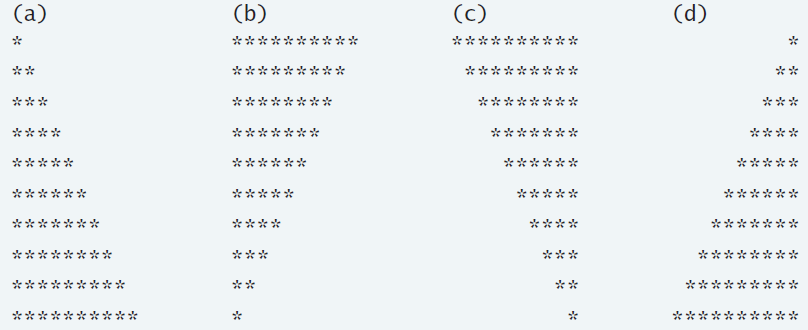
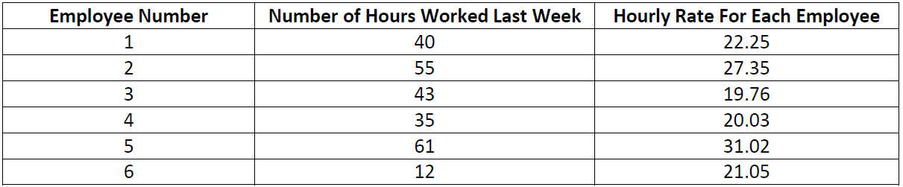

Assignment #1
Submitted by: Ranjit S Dhaliwal
- A class of ten students took a quiz. The grades (integers in the range 0 to 100) for this quiz are available to you. Determine the class average on the quiz.
- Develop a class-averaging program that will process an arbitrary number of grades each time the program is run.
- (Nested Control Statement) A college offers a course that prepares students for the state licensing exam for real estate brokers. Last year, several of the students who completed this course took the licensing exam. Naturally, the college wants to know how well its students performed. You have been asked to write a program to summarize the results. You have been given a list of these 10 students. Next to each name is written a 1 if the student passed the exam and a 2 if the student failed. Your program should analyze the results of the exam as follows:
- Input each test result (i.e., a 1 or a 2). Display the message “Enter result” on the screen each time the program requests another test result.
- Count the number of test results of each type.
- Display a summary of the test results indicating the number of students who passed and the number of students who failed.
- If more than eight students passed the exam, print the message “Raise tuition.”
- Write a script that finds the smallest of several non-negative integers. Assume that the first value read specifies the number of values to be input from the user.
- Write a script that calculates the product of the odd integers from 1 to 15 then outputs HTML text that displays the results.
- Write a script that outputs XHTML to display the given patterns separately, one below the other. Use for statements to generate the patterns. All asterisks (*) should be printed by a single statement of the form document.write( "*" ); (this causes the asterisks to print side by side). A statement of the form document.writeln( " <br/> " ); can be used to position to the next line. A statement of the form document.write( " " ); can be used to display a space (needed for the last two patterns). There should be no other output statements in the program. [Hint: The last two patterns require that each line begin with an appropriate number of blanks. You may need to use the XHTML
"pre" tags.]

- Drivers are concerned with the mileage obtained by their automobiles. One driver has kept track of
several tankfuls of gasolie by recording the number of miles driven and the number of gallons used for
each thankful. Develop a script that will take as input the miles driven and gallons used (both as
integers), for each thankful. The script should calculate and output HTML5 text that displays the number
of miles per gallon obtained for each thankful and prints the combined number of miles per gallon
obtained for all tankfuls up to this point. Use prompt dialogs to obtain the data from the users. Use your
own made-up data to solve the problem.
- A large company pays its salespeople on a commission basis. The salespeople receive $200 per week,
plus 9 percent of their gross sales for the week. For example, a salesperson who sells $5000 worth of
merchandise in a week receives $200 plus 9 percent of $5,000, or a total of $650. You have been
supplied with a list of the items sold by each salesperson. The value of these items are as follows:

Develop a script that inputs one salesperson’s items sold for last week, calculates the salesperson’s
earnings, and outputs HTML5 text that displays the salesperson’s earnings.
- Develop a script that will determine the gross pay for each of three employees. The company pays
“straight time” for the first 40 hours worked by each employee and pays “time and a half” for all hours
worked in excess of 40 hours. You’re given a list of the employees of the company, the number of hours
each employee worked last week, and the hourly rate of each employee. Your script should input this
information for each employee, determine the employee’s gross pay and output HTML5 text that
displays the employee’s gross pay. Use prompt dialogs to input the data. Some sample data:

- The process of finding the largest value (i.e. the maximum of a group of values) is used frequently in
computer applications. For example, a script that determines the winner of a sales contest would input
the number of units sold by each salesperson. The salesperson who sells the most units wins the
content. Write a script that inputs a series of 10 single-digit numbers as characters {eg. 6, 7, 3, 6, 4, 2, 5,
-7, 1, 2} determines the largest of the numbers, and outputs a message that displays the largest number.
Your script should use three variables: counter, number (the current digit input to the script, largest (the largest number found so far). Note that you can also change the program to be sentinel controlled to end whenever the user specifies, dealing with an unspecified data range.
- Write a script that outputs HTML5 text that keeps displaying in the browser window the multiples of the integer 2 – namely, 2, 4, 8, 16, 32, 64, etc. Your loop should not terminate (make it an infinite loop). What happens when you run this script?
- A company wants to transmit data over the telephone, but it is concerned that its phones may be tapped. All of its data is transmitted as four-digit integers. It has asked you to write a program that will encrypt its data so that the data may be transmitted more securely. Your script should read a four-digit integer entered by the user in a prompt dialog and encrypt it as follows: Replace each digit by (the sum of that digit plus 7) modulus 10. Then swap the first digit with the third, and swap the second digit with the fourth. Then output text that displays the encrypted integer. Once this is done, write a program that inputs an encrypted four-digit integer and decrypts it to form the original number.
- A palindrome is a number or a text phrase that reads the same backward and forward. For example, each of the following five-digit integers is a palindrome: 12321, 55555, 45554, 11611. Write a script that reads in a five-digit integer and determines whether it’s a palindrome. If the number is not five digits long, display an alert dialog indicating the problem to the user. Allow the user to enter a new value after dismissing the alert dialogue. [hint: try using both division and remainder operations to “pick-off” each digit]
- A person invests $1000.00 in a savings account yielding 5 percent interest. Assuming that all the interest is left on deposit, calculate and print the amount of money in the account at the end of each year for 10 years. Use the following formula to determine the amounts:
- a = p * (1 + r)n where p is the original amount invested (i.e., the principal), r is the annual interest rate, n is the number of years, a is the amount on deposit at the end of the nth year.
- Create a program which puts the value of the amount on deposit every year for the next 10 years, as well as the count of the year, in a table.